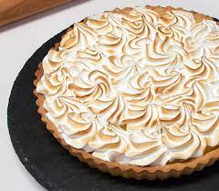

LEMON
LEMON PIE RECIPE!!!!

This is the best way to make a lemon pie; this is the most delicious dessert you can make to share
with your family let's begin!!!
In addition this lemon pie has an interesting story, it is known as a lemon custard pie
and it was made with ingredients like eggs, sugar and milk.
LET'S SEE THE INGREDIENTS
- 4 lemons, juice
- A cup of condensed milk
- A cup of milk cream
LET'S START
- On a lightly floured surface, roll dough to a 1/8-in.-thick circle; transfer to a 9-in. pie plate. Trim to 1/2 in. beyond rim of plate;
flute edge. Refrigerate 30 minutes. Preheat oven to 425°.
- Line crust with a double thickness of foil. Fill with pie weights, dried beans or uncooked rice.
Bake on a lower oven rack until edge is golden brown, 20-25 minutes. Remove foil and weights;
bake until bottom is golden brown,3-6 minutes longer. Cool on a wire rack. Reduce oven setting to 350°.